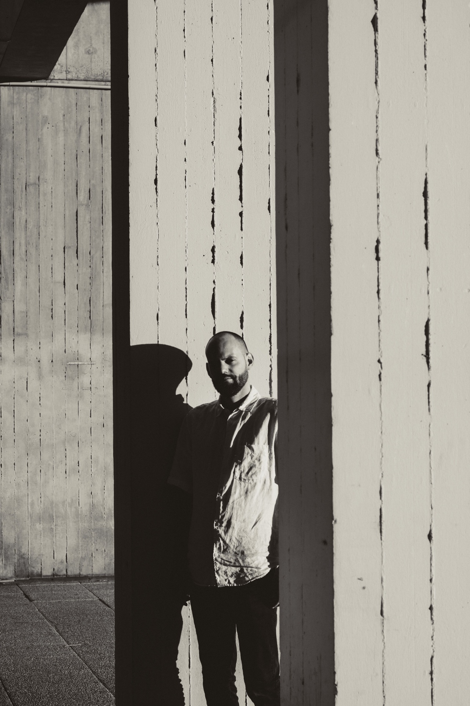

Martin Gaufryau
Architecte DE HMONP
Né le 6 janvier 1993 à Pessac (33)
Dax / Bordeaux
Prix / distinctions
- • 2024, nominé au prix "Building of the Year 2024" d'ArchDaily dans la catégorie petites échelles et installations, Faille Cachée
- • 2023, nominé au prix "Building of the Year 2023" d'ArchDaily dans la catégorie petites échelles et installations, Le Paravue
- • 2021, Lauréat du Festival des cabanes 7e édition
- • 2020, Lauréat PUCA REHA 3 sur le thème de "la réhabilitation lourde des logements, un levier de la qualité architecturale, urbaine et environnementale" avec Greenwich0013 Architecture
Enseignement
Chargé d’enseignement Université Bordeaux Montaigne - UFR humanités Bordeaux 2LAAT1 UE Découverte Architecture
• 2022-........, Enseignant à LISAA - L'Institut Supérieur des Arts Appliqués, Bordeaux + jurys
• 2020-2021, Moniteur en atelier de licence à l'École Nationale Supérieure d'Architecture et de Paysage de Bordeaux Champ TPCAU avec Loeiz Caradec + jurys
• 2019-........, Enseignant à l'Imm@concept Bordeaux + jurys
Conférences / interventions
• 2024, Arts et Métiers Bordeaux - Talence, BEST - Board of European Students of Technology
Conférence + atelier - In Praise of Small Scale / Eloge de la Petite Échelle
• Com d'Archi Podcast par Charlotte Depondt
S5#44 [FR] Itv, "Architecte, l'un des plus beaux métiers du monde" avec Martin Gaufryau
• 2022, School of Architecture, Planning & Landscape - Newcastle University
Présentation du projet "Le Paravue" en introduction d'un atelier d'analyse architectural
Expositions
• Mai 2019, Espace Saint-Rémi, Bordeaux
Photographies "Triptique" et "Irrévérence"
Exposition "Photo d'identité", avec Q_lture et l'ICART
• Avril 2019, Base sous-marine, Bordeaux
Affiches Workshop D'Un Soleil à l'autre
• Avril 2018, 308 - Maison de l'Architecture, Bordeaux
Atelier Brancusi - Renzo Piano : Un écrin pour l’oeuvre de Brancusi
En collaboration avec Florian Darmuzey, Mariz Landier et Catia Rodrigues
Presse / publications
- • Designboom - 2023
Martin Gaufryau’s installation uses structural pine wood porticos to frame a forest path par Ravail Khan - • METALOCUS - 2023
Gate to the field. Faille Cachée, entrance to the Parc de Marais by Martin Gaufryau + Quentin Barthe + Tom Patenotte par Antonio Corredera - • ArchDaily - 2023
Faille Cachée des Marais Park Entrance / Martin Gaufryau + Quentin Barthe + Tom Patenotte par Paula Pintos - • Le Moniteur - N°6234 - 05/2023
Bourg-Saint-Maurice : de futurs architectes repensent l’espace public par Claude Thomas - • Livre Le Prix Régional de la Construction Bois AuRa (Auvergne-Rhône-Alpes) - 2023
Le Paravue – Présent dans le livret imprimé officiel (Candidatures 2023, p. 63) - • architektur.aktuell - N°472 - 06/2023
Textile Transluzenz par Susanne Stacher - • Séquence Bois - N°139 - 02/2023
FESTIVAL DES CABANES 2023 - Lancement - • ArchDaily - 2022
Le Paravue Cabin / Martin Gaufryau + Quentin Barthe + Tom Patenotte par Paula Pintos - • METALOCUS - 2022
Winner of "Le Festival Des Cabanes". Le Paravue Cabin by Martin Gaufryau + Quentin Barthe + Tom Patenotte par Dilyana Dragoeva - • Divisare - 2022
Martin Gaufryau, Quentin Barthe, Tom Patenotte - Le Paravue, "Le Festival des Cabanes. Contextual architecture". 7th edition - • Dezeen - 2022
Le Festival des Cabanes organiser selects eight sculptural cabins from the competition par Alice Finney - • 哇
- • Le Moniteur - 10 avril 2020
Continuité pédagogique : Entre bricolage et numérique, le confinement reformate la formation
Études
- • 2021-2022, École Nationale d'Architecture Paris Val de Seine, Habilitation à la maîtrise d'oeuvre en son nom propre
- • 2019-2021, École Nationale Supérieure d'Architecture et de Paysage de Bordeaux / Diplôme d'Etat d'architecte (Master)
- • 2018-2021, Élève élu au conseil d'administration de l'ENSAPBx (tête de liste, 4 sièges sur 4 gagnés)
- • 2017-2021, Représentant de promotion à l'ENSAPBx
- • 2017-2018, Élève élu à la Comission de la Pédagogie et de la Recherche de l'ENSAPBx
- • 2016-2019, École Nationale Supérieure d'Architecture et de Paysage de Bordeaux / Diplôme d'études en architecture (Licence)
- • 2014-2016, Imm@concept - Le Mirail, Bordeaux / BTS design d'espace
- • 2011-2012, Élève L1 élu au Conseil d'Administration de l'école des Beaux-Arts de Bordeaux
- • 2011-2014, Ecole des Beaux-Arts de Bordeaux / design global
- • 2011 Lycée Saint Jacques de Compostelle de Dax / Bac ES option arts plastiques
Je fais aussi de la musique électronique et suis fondateur gérant d'un petit label indépendant...
Un grand merci à (par ordre chronologique de rencontre) Angèle Cazaux, Laure Pouyfaucon, Madeleine Montaigne, Pierre Cornet, Isabelle Fourcade, Antoine Carde, Amandine Sauvageon, Roger Sauvageon, Ravi Sauvageon, Alexandre Garreau, Karine Silvestre, Loeiz Caradec, Sandrine Forais, Rudy Ricciotti, Pierre Goutti, Mathieu De Marien, Philippe Brachard, Xavier Leibar, Paul Marion, Jean-Christophe Masnada...
Crédit photo : ©2025 Mimose Morfin (Mimoseart)